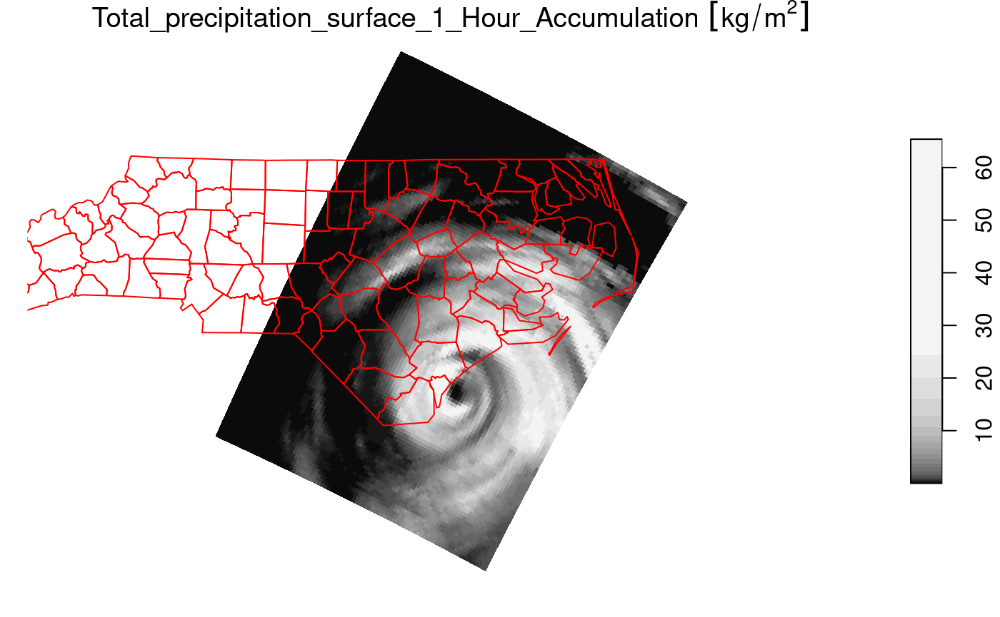

Package stars provides infrastructure for data
cubes, array data with labeled dimensions, with emphasis on arrays
where some of the dimensions relate to time and/or space.
Spatial data cubes are arrays with one or more spatial dimensions.
Raster data cubes have at least two spatial dimensions that form the
raster tesselation. Vector data cubes have at least one spatial
dimension that may for instance reflect a polygon tesselation, or a set
of point locations. Conversions between the two (rasterization,
polygonization) are provided. Vector data are represented by simple
feature geometries (packages sf). Tidyverse methods are
provided.
The stars package is loaded by
library(stars)
## Loading required package: abind
## Loading required package: sf
## Linking to GEOS 3.10.2, GDAL 3.4.1, PROJ 8.2.1; sf_use_s2() is TRUESpatiotemporal arrays are stored in objects of class
stars; methods for class stars currently
available are
methods(class = "stars")
## [1] [ [[<- [<- %in%
## [5] $<- adrop aggregate aperm
## [9] as.data.frame as.POSIXct c coerce
## [13] contour cut dim dimnames
## [17] dimnames<- droplevels filter hist
## [21] image initialize is.na Math
## [25] merge Ops plot predict
## [29] print show slotsFromS3 split
## [33] st_apply st_area st_as_sf st_as_sfc
## [37] st_as_stars st_bbox st_coordinates st_crop
## [41] st_crs st_crs<- st_dimensions st_dimensions<-
## [45] st_downsample st_extract st_geometry st_interpolate_aw
## [49] st_intersects st_join st_mosaic st_normalize
## [53] st_redimension st_sample st_set_bbox st_transform_proj
## [57] st_transform time write_stars
## see '?methods' for accessing help and source code(tidyverse methods are only visible after loading package
tidyverse).
Reading a satellite image
We can read a satellite image through GDAL, e.g. from a GeoTIFF file in the package:
tif = system.file("tif/L7_ETMs.tif", package = "stars")
x = read_stars(tif)
plot(x, axes = TRUE)
We see that the image is geographically referenced (has coordinate
values along axes), and that the object returned (x) has
three dimensions called x, y and
band, and has one attribute:
x
## stars object with 3 dimensions and 1 attribute
## attribute(s):
## Min. 1st Qu. Median Mean 3rd Qu. Max.
## L7_ETMs.tif 1 54 69 68.91242 86 255
## dimension(s):
## from to offset delta refsys point x/y
## x 1 349 288776 28.5 SIRGAS 2000 / UTM zone 25S FALSE [x]
## y 1 352 9120761 -28.5 SIRGAS 2000 / UTM zone 25S FALSE [y]
## band 1 6 NA NA NA NAEach dimension has a name; the meaning of the fields of a single dimension are:
| field | meaning |
|---|---|
| from | the origin index (1) |
| to | the final index (dim(x)[i]) |
| offset | the start value for this dimension (pixel boundary), if regular |
| delta | the step (pixel, cell) size for this dimension, if regular |
| refsys | the reference system, or proj4string |
| point | logical; whether cells refer to points, or intervals |
| values | the sequence of values for this dimension (e.g., geometries), if irregular |
This means that for an index i (starting at \(i=1\)) along a certain dimension, the corresponding dimension value (coordinate, time) is \(\mbox{offset} + (i-1) \times \mbox{delta}\). This value then refers to the start (edge) of the cell or interval; in order to get the interval middle or cell centre, one needs to add half an offset.
Dimension band is a simple sequence from 1 to 6. Since
bands refer to colors, one could put their wavelength values in the
values field.
For this particular dataset (and most other raster datasets), we see
that delta for dimension y is negative: this means that
consecutive array values have decreasing \(y\) values: cell indexes increase from top
to bottom, in the direction opposite to the \(y\) axis.
read_stars reads all bands from a raster dataset, or
optionally a subset of raster datasets, into a single stars
array structure. While doing so, raster values (often UINT8 or UINT16)
are converted to double (numeric) values, and scaled back to their
original values if needed if the file encodes the scaling
parameters.
The data structure stars is a generalisation of the
tbl_cube found in cubelyr; we can convert to
that by
library(cubelyr)
as.tbl_cube(x)
## Source: local array [737,088 x 3]
## D: x [dbl, 349]
## D: y [dbl, 352]
## D: band [int, 6]
## M: L7_ETMs.tif [dbl[,352,6]]but this will cause a loss of certain properties (cell size, reference system, vector geometries)
Switching attributes to dimensions and back
(x.spl = split(x, "band"))
## stars object with 2 dimensions and 6 attributes
## attribute(s):
## Min. 1st Qu. Median Mean 3rd Qu. Max.
## X1 47 67 78 79.14772 89 255
## X2 32 55 66 67.57465 79 255
## X3 21 49 63 64.35886 77 255
## X4 9 52 63 59.23541 75 255
## X5 1 63 89 83.18266 112 255
## X6 1 32 60 59.97521 88 255
## dimension(s):
## from to offset delta refsys point x/y
## x 1 349 288776 28.5 SIRGAS 2000 / UTM zone 25S FALSE [x]
## y 1 352 9120761 -28.5 SIRGAS 2000 / UTM zone 25S FALSE [y]
merge(x.spl)
## stars object with 3 dimensions and 1 attribute
## attribute(s):
## Min. 1st Qu. Median Mean 3rd Qu. Max.
## X1.X2.X3.X4.X5.X6 1 54 69 68.91242 86 255
## dimension(s):
## from to offset delta refsys point values
## x 1 349 288776 28.5 SIRGAS 2000 / UTM zone 25S FALSE NULL
## y 1 352 9120761 -28.5 SIRGAS 2000 / UTM zone 25S FALSE NULL
## attributes 1 6 NA NA NA NA X1,...,X6
## x/y
## x [x]
## y [y]
## attributesWe see that the newly created dimension lost its name, and the single
attribute got a default name. We can set attribute names with
setNames, and dimension names and values with
st_set_dimensions:
merge(x.spl) |>
setNames(names(x)) |>
st_set_dimensions(3, values = paste0("band", 1:6)) |>
st_set_dimensions(names = c("x", "y", "band"))
## stars object with 3 dimensions and 1 attribute
## attribute(s):
## Min. 1st Qu. Median Mean 3rd Qu. Max.
## L7_ETMs.tif 1 54 69 68.91242 86 255
## dimension(s):
## from to offset delta refsys point values
## x 1 349 288776 28.5 SIRGAS 2000 / UTM zone 25S FALSE NULL
## y 1 352 9120761 -28.5 SIRGAS 2000 / UTM zone 25S FALSE NULL
## band 1 6 NA NA NA NA band1,...,band6
## x/y
## x [x]
## y [y]
## bandSubsetting
Besides the tidyverse subsetting and selection operators
explained in this vignette, we can also use
[ and [[.
Since stars objects are a list of arrays
with a metadata table describing dimensions, list extraction (and
assignment) works as expected:
class(x[[1]])
## [1] "array"
dim(x[[1]])
## x y band
## 349 352 6
x$two = 2 * x[[1]]
x
## stars object with 3 dimensions and 2 attributes
## attribute(s):
## Min. 1st Qu. Median Mean 3rd Qu. Max.
## L7_ETMs.tif 1 54 69 68.91242 86 255
## two 2 108 138 137.82484 172 510
## dimension(s):
## from to offset delta refsys point x/y
## x 1 349 288776 28.5 SIRGAS 2000 / UTM zone 25S FALSE [x]
## y 1 352 9120761 -28.5 SIRGAS 2000 / UTM zone 25S FALSE [y]
## band 1 6 NA NA NA NAAt this level, we can work with array objects
directly.
The stars subset operator [ works a bit
different: its
- first argument selects attributes
- second argument selects the first dimension
- third argument selects the second dimension, etc
Thus,
x["two", 1:10, , 2:4]
## stars object with 3 dimensions and 1 attribute
## attribute(s):
## Min. 1st Qu. Median Mean 3rd Qu. Max.
## two 36 100 116 119.7326 136 470
## dimension(s):
## from to offset delta refsys point x/y
## x 1 10 288776 28.5 SIRGAS 2000 / UTM zone 25S FALSE [x]
## y 1 352 9120761 -28.5 SIRGAS 2000 / UTM zone 25S FALSE [y]
## band 2 4 NA NA NA NAselects the second attribute, the first 10 columns (x-coordinate), all rows, and bands 2-4.
Alternatively, when [ is given a single argument of
class sf, sfc or bbox,
[ will work as a crop operator:
circle = st_sfc(st_buffer(st_point(c(293749.5, 9115745)), 400), crs = st_crs(x))
plot(x[circle][, , , 1], reset = FALSE)
plot(circle, col = NA, border = 'red', add = TRUE, lwd = 2)
Overviews
We can read rasters at a lower resolution when they contain so-called
overviews. For this GeoTIFF file, they were created with the
gdaladdo utility, in particular
gdaladdo -r average L7_ETMs.tif 2 4 8 16which adds coarse resolution versions by using the average resampling method to compute values based on blocks of pixels. These can be read by
x1 = read_stars(tif, options = c("OVERVIEW_LEVEL=1"))
x2 = read_stars(tif, options = c("OVERVIEW_LEVEL=2"))
x3 = read_stars(tif, options = c("OVERVIEW_LEVEL=3"))
dim(x1)
dim(x2)
dim(x3)
par(mfrow = c(1, 3), mar = rep(0.2, 4))
image(x1[,,,1])
image(x2[,,,1])
image(x3[,,,1])Reading a raster time series: NetCDF
Another example is when we read raster time series model outputs in a NetCDF file, e.g. by
system.file("nc/bcsd_obs_1999.nc", package = "stars") |>
read_stars() -> w
## pr, tas,We see that
w
## stars object with 3 dimensions and 2 attributes
## attribute(s):
## Min. 1st Qu. Median Mean 3rd Qu. Max. NA's
## pr [mm/m] 0.5900000 56.139999 81.88000 101.26433 121.07250 848.54999 7116
## tas [C] -0.4209678 8.898887 15.65763 15.48932 21.77979 29.38581 7116
## dimension(s):
## from to offset delta refsys values x/y
## x 1 81 -85 0.125 NA NULL [x]
## y 1 33 37.125 -0.125 NA NULL [y]
## time 1 12 NA NA POSIXct 1999-01-31,...,1999-12-31For this dataset we can see that
- variables have units associated (and a wrong unit,
Cis assigned to temperature) - time is now a dimension, with proper units and time steps
Alternatively, this dataset can be read using read_ncdf,
as in
system.file("nc/bcsd_obs_1999.nc", package = "stars") |>
read_ncdf()
## no 'var' specified, using pr, tas
## other available variables:
## latitude, longitude, time
## Will return stars object with 32076 cells.
## No projection information found in nc file.
## Coordinate variable units found to be degrees,
## assuming WGS84 Lat/Lon.
## stars object with 3 dimensions and 2 attributes
## attribute(s):
## Min. 1st Qu. Median Mean 3rd Qu. Max. NA's
## pr [mm/m] 0.5900000 56.139999 81.88000 101.26433 121.07250 848.54999 7116
## tas [C] -0.4209678 8.898887 15.65763 15.48932 21.77979 29.38581 7116
## dimension(s):
## from to offset delta refsys values x/y
## longitude 1 81 -85 0.125 WGS 84 NULL [x]
## latitude 1 33 33 0.125 WGS 84 NULL [y]
## time 1 12 NA NA POSIXct 1999-01-31,...,1999-12-31The difference between read_ncdf and
read_stars for NetCDF files is that the former uses package
RNetCDF to directly read the NetCDF file, where the latter uses the GDAL
driver for NetCDF files.
Reading datasets from multiple files
Model data are often spread across many files. An example of a 0.25 degree grid, global daily sea surface temperature product is found here; the subset from 1981 used below was downloaded from a NOAA ftp site that is no longer available in this form. (ftp site used to be eclipse.ncdc.noaa.gov/pub/OI-daily-v2/NetCDF/1981/AVHRR/).
We read the data by giving read_stars a vector with
character names:
x = c(
"avhrr-only-v2.19810901.nc",
"avhrr-only-v2.19810902.nc",
"avhrr-only-v2.19810903.nc",
"avhrr-only-v2.19810904.nc",
"avhrr-only-v2.19810905.nc",
"avhrr-only-v2.19810906.nc",
"avhrr-only-v2.19810907.nc",
"avhrr-only-v2.19810908.nc",
"avhrr-only-v2.19810909.nc"
)
# see the second vignette:
# install.packages("starsdata", repos = "http://pebesma.staff.ifgi.de", type = "source")
file_list = system.file(paste0("netcdf/", x), package = "starsdata")
(y = read_stars(file_list, quiet = TRUE))
## stars object with 4 dimensions and 4 attributes
## attribute(s), summary of first 1e+05 cells:
## Min. 1st Qu. Median Mean 3rd Qu. Max. NA's
## sst [°*C] -1.80 -1.19 -1.05 -0.3201670 -0.20 9.36 13360
## anom [°*C] -4.69 -0.06 0.52 0.2299385 0.71 3.70 13360
## err [°*C] 0.11 0.30 0.30 0.2949421 0.30 0.48 13360
## ice [percent] 0.01 0.73 0.83 0.7657695 0.87 1.00 27377
## dimension(s):
## from to offset delta refsys x/y
## x 1 1440 0 0.25 NA [x]
## y 1 720 90 -0.25 NA [y]
## zlev 1 1 0 [m] NA NA
## time 1 9 1981-09-01 UTC 1 days POSIXctNext, we select sea surface temperature (sst), and drop
the singular zlev (depth) dimension using
adrop:
library(dplyr)
##
## Attaching package: 'dplyr'
## The following objects are masked from 'package:stats':
##
## filter, lag
## The following objects are masked from 'package:base':
##
## intersect, setdiff, setequal, union
library(abind)
z <- y |> select(sst) |> adrop()We can now graph the sea surface temperature (SST) using
ggplot, which needs data in a long table form, and without
units:
# convert POSIXct time to character, to please ggplot's facet_wrap()
z1 = st_set_dimensions(z, 3, values = as.character(st_get_dimension_values(z, 3)))
library(ggplot2)
library(viridis)
## Loading required package: viridisLite
library(ggthemes)
ggplot() +
geom_stars(data = z1[1], alpha = 0.8, downsample = c(10, 10, 1)) +
facet_wrap("time") +
scale_fill_viridis() +
coord_equal() +
theme_map() +
theme(legend.position = "bottom") +
theme(legend.key.width = unit(2, "cm"))
Writing stars objects to disk
We can write a stars object to disk by using
write_stars; this used the GDAL write engine. Writing
NetCDF files without going through the GDAL interface is currently not
supported. write_stars currently writes only a single
attribute:
write_stars(adrop(y[1]), "sst.tif")See the explanation of merge above to see how multiple
attributes can be merged (folded) into a dimension.
Cropping a raster’s extent
Using a curvilinear grid, taken from the example of
read_ncdf:
prec_file = system.file("nc/test_stageiv_xyt.nc", package = "stars")
prec = read_ncdf(prec_file, curvilinear = c("lon", "lat"))
## no 'var' specified, using Total_precipitation_surface_1_Hour_Accumulation
## other available variables:
## lat, lon, time
## Will return stars object with 236118 cells.
## No projection information found in nc file.
## Coordinate variable units found to be degrees,
## assuming WGS84 Lat/Lon.
##plot(prec) ## gives error about unique breaks
## remove NAs, zeros, and give a large number
## of breaks (used for validating in detail)
qu_0_omit = function(x, ..., n = 22) {
if (inherits(x, "units"))
x = units::drop_units(na.omit(x))
c(0, quantile(x[x > 0], seq(0, 1, length.out = n)))
}
library(dplyr) # loads slice generic
prec_slice = slice(prec, index = 17, along = "time")
plot(prec_slice, border = NA, breaks = qu_0_omit(prec_slice[[1]]), reset = FALSE)
nc = sf::read_sf(system.file("gpkg/nc.gpkg", package = "sf"), "nc.gpkg")
plot(st_geometry(nc), add = TRUE, reset = FALSE, col = NA, border = 'red')
We can now crop the grid to those cells falling in
nc = st_transform(nc, st_crs(prec_slice)) # datum transformation
plot(prec_slice[nc], border = NA, breaks = qu_0_omit(prec_slice[[1]]), reset = FALSE)
plot(st_geometry(nc), add = TRUE, reset = FALSE, col = NA, border = 'red')
The selection prec_slice[nc] essentially calls
st_crop(prec_slice, nc) to get a cropped selection. What
happened here is that all cells not intersecting with North Carolina
(sea) are set to NA values. For regular grids, the extent
of the resulting stars object is also be reduced (cropped)
by default; this can be controlled with the crop parameter
to st_crop and [.stars.
Vector data cube example
Like tbl_cube, stars arrays have no limits
to the number of dimensions they handle. An example is the
origin-destination (OD) matrix, by time and travel mode.
OD: space x space x travel mode x time x time
We create a 5-dimensional matrix of traffic between regions, by day, by time of day, and by travel mode. Having day and time of day each as dimension is an advantage when we want to compute patterns over the day, for a certain period.
nc = st_read(system.file("gpkg/nc.gpkg", package="sf"))
## Reading layer `nc.gpkg' from data source
## `/home/runner/work/_temp/Library/sf/gpkg/nc.gpkg' using driver `GPKG'
## Simple feature collection with 100 features and 14 fields
## Geometry type: MULTIPOLYGON
## Dimension: XY
## Bounding box: xmin: -84.32385 ymin: 33.88199 xmax: -75.45698 ymax: 36.58965
## Geodetic CRS: NAD27
to = from = st_geometry(nc) # 100 polygons: O and D regions
mode = c("car", "bike", "foot") # travel mode
day = 1:100 # arbitrary
library(units)
## udunits database from /usr/share/xml/udunits/udunits2.xml
units(day) = as_units("days since 2015-01-01")
hour = set_units(0:23, h) # hour of day
dims = st_dimensions(origin = from, destination = to, mode = mode, day = day, hour = hour)
(n = dim(dims))
## origin destination mode day hour
## 100 100 3 100 24
traffic = array(rpois(prod(n), 10), dim = n) # simulated traffic counts
(st = st_as_stars(list(traffic = traffic), dimensions = dims))
## stars object with 5 dimensions and 1 attribute
## attribute(s), summary of first 1e+05 cells:
## Min. 1st Qu. Median Mean 3rd Qu. Max.
## traffic 0 8 10 10.0015 12 27
## dimension(s):
## from to offset delta
## origin 1 100 NA NA
## destination 1 100 NA NA
## mode 1 3 NA NA
## day 1 100 1 [(days since 2015-01-01)] 1 [(days since 2015-01-01)]
## hour 1 24 0 [h] 1 [h]
## refsys point
## origin NAD27 FALSE
## destination NAD27 FALSE
## mode NA FALSE
## day udunits FALSE
## hour udunits FALSE
## values
## origin MULTIPOLYGON (((-81.47276...,...,MULTIPOLYGON (((-78.65572...
## destination MULTIPOLYGON (((-81.47276...,...,MULTIPOLYGON (((-78.65572...
## mode car , bike, foot
## day NULL
## hour NULLThis array contains the simple feature geometries of origin and
destination so that we can directly plot every slice without additional
table joins. If we want to represent such an array as a
tbl_cube, the simple feature geometry dimensions need to be
replaced by indexes:
st |> as.tbl_cube()The following demonstrates how dplyr can filter bike
travel, and compute mean bike traffic by hour of day:
Extracting at point locations, aggregating over polygons
Data cube values at point location can be extracted by
st_extract, an example is found in vignette 7
Aggregates, such as mean, maximum or modal values can be obtained by
aggregate. In this example we use a categorical raster, and
try to find the modal (most frequent) class within two circular
polygons:
s = system.file("tif/lc.tif", package = "stars")
r = read_stars(s, proxy = FALSE) |> droplevels()
st_point(c(3190631, 3125)) |> st_sfc(crs = st_crs(r)) |> st_buffer(25000) -> pol1
st_point(c(3233847, 21027)) |> st_sfc(crs = st_crs(r)) |> st_buffer(10000) -> pol2
if (isTRUE(dev.capabilities()$rasterImage == "yes")) {
plot(r, key.width = lcm(4), reset = FALSE, key.pos = 4)
plot(c(pol1, pol2), col = NA, border = c('yellow', 'green'), lwd = 2, add = TRUE)
}
To find the modal value, we need a function that gives back the label
corresponding to the class which is most frequent, using
table:
We can then call aggregate on the raster map, and the
set of the two circular polygons pol1 and
pol2, and pass the function f:
aggregate(r, c(pol1, pol2), f) |> st_as_sf()
## Simple feature collection with 2 features and 1 field
## Geometry type: POLYGON
## Dimension: XY
## Bounding box: xmin: 3165631 ymin: -21875 xmax: 3243847 ymax: 31027
## Projected CRS: Albers Conical Equal Area
## lc.tif geometry
## 1 Evergreen Forest POLYGON ((3215631 3125, 321...
## 2 Developed, Medium Intensity POLYGON ((3243847 21027, 32...